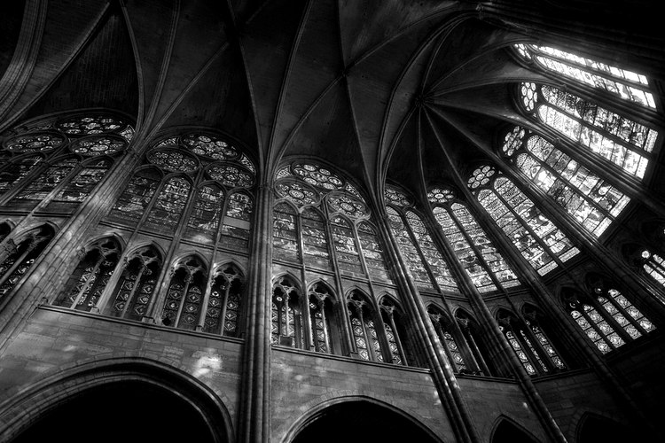

Мистецтво — галузь людської культури, в якій за допомогою знаків через конкретні о?брази світу виражаються його узагальнені сенси. Зазвичай поділяється на літературу, образотворче мистецтво, декоративно-ужиткове, сценічне, музику та архітектуру.
В широкому сенсі мистецтвом називають досконале вміння в якійсь справі, галузі; майстерність.
